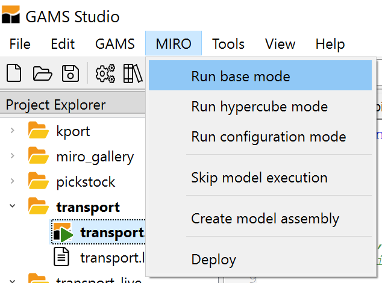
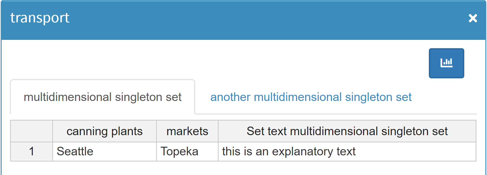
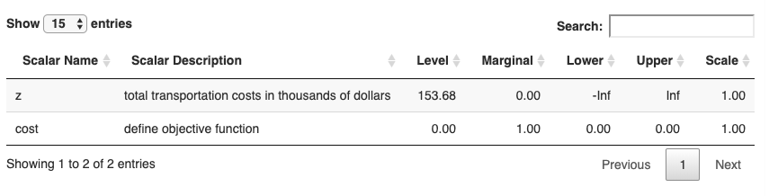

The well-known model from the GAMS model library is called trnsport. To avoid two models of the same name, the GAMS MIRO Demo model is called transport.
Model deployment
Introduction
After testing the demo applications, let's now turn an existing GAMS model into a MIRO app. When developing GAMS MIRO, we focused on automating this process and making it possible with very few adjustments to your model. In order to get started, it's a good idea to have a look at the GAMS code of the demo applications.
The model transport is one of the demo applications that come with your GAMS MIRO installation. However, for illustration purposes we now take the original trnsport.gms model from the GAMS Model Library.
If you want to join us in going step by step from the "raw" model to our first MIRO app, download the corresponding file from the Model Library and put it in a directory of your choice.
Turn your GAMS model into a GAMS MIRO app
Demo Applications
The MIRO demo applications can be found in the GAMS data utilities library. You can get them e.g. in GAMS Studio via the Model Library Explorer (shortcut F6). You can also find those demo applications here.
The following demos are available:
- transport
This problem looks for a least cost shipping schedule that meets requirements at markets and supplies at factories. More about this transportation problem, see here.Note: - transport_live
A "live" version of the transport model. Extends transport in the sense that locations of suppliers and markets can be adjusted right from within MIRO. Geographical information about the cities you entered is automatically fetched and the distance matrix calculated via embedded Python code.
This model needs an internet connection. - pickstock
Optimization model to find a small subset of stocks of the Dow Jones index together with some weights, such that this portfolio has a similar behavior to the overall index. - kport
This problem computes minimal cost solutions satisfying the demand of certain product portfolios. More about this optimization Problem, see here.
Model adjustments
Every GAMS model can be deployed with MIRO in just a few steps. First, those GAMS symbols that you want to be visible in the interface need to be declared. This can be done by enclosing the corresponding symbol declarations with the tags $onExternalInput
/ $offExternalInput
for input data and $onExternalOutput
/ $offExternalOutput
for output data. These tags can be used multiple times within a model. Symbols which are not tagged won’t be visible in the web interface.
The code below shows a small example:
$onExternalInput
Parameter
symbol_1(dim1, dim2) 'Displayed in MIRO (model input data)'
symbol_2(dim3) 'Displayed in MIRO (model input data)';
$offExternalInput
Parameter
symbol_3(dim4) 'NOT displayed in MIRO';Here, the parameters symbol_1 and symbol_2 are declared between the tags $onExternalInput
and $offExternalInput
. They will be visible in MIRO (e.g. as tables).
symbol_3, on the other hand, was declared outside the keywords. This parameter will not be visible in MIRO (however, of course it is still available as a GAMS symbol in your model).
The following GAMS symbols can be used in GAMS MIRO:
- Sets
- Parameters / Tables
- Scalars
- Singleton Sets
- Variables
- Equations
- GAMS Options
- Double dash parameters
The configuration of GAMS Options and double dash parameters differs from the other symbols. Learn more about this here.
File encoding:

When you want to use non-ASCII characters in MIRO, your GAMS model files need to be encoded with UTF-8. In GAMS Studio you can change the encoding of your file via Edit → Encoding → convert to ... → UTF-8. Other file encodings are not supported in GAMS MIRO!
Example:
Let's try this for the model trnsport now. This is what the input data section of the model looks like when we have loaded it from the GAMS Model Library:
Set
i 'canning plants' / seattle, san-diego /
j 'markets' / new-york, chicago, topeka /;
Parameter
a(i) 'capacity of plant i in cases'
/ seattle 350
san-diego 600 /
b(j) 'demand at market j in cases'
/ new-york 325
chicago 300
topeka 275 /;
Table d(i,j) 'distance in thousands of miles'
new-york chicago topeka
seattle 2.5 1.7 1.8
san-diego 2.5 1.8 1.4;
Scalar f 'freight in dollars per case per thousand miles' / 90 /;
Parameter c(i,j) 'transport cost in thousands of dollars per case';Let's import some of the data from MIRO, namely the parameters a, b and d as well as the scalar f. In order to tell MIRO that you want these symbols to come from there, we now flag them with the mentioned annotations in the symbol declarations:
Set
i 'canning plants' / seattle, san-diego /
j 'markets' / new-york, chicago, topeka /;
$onExternalInput
Parameter
a(i) 'capacity of plant i in cases'
/ seattle 350
san-diego 600 /
b(j) 'demand at market j in cases'
/ new-york 325
chicago 300
topeka 275 /;
Table d(i,j) 'distance in thousands of miles'
new-york chicago topeka
seattle 2.5 1.7 1.8
san-diego 2.5 1.8 1.4;
Scalar f 'freight in dollars per case per thousand miles' / 90 /;
$offExternalInput
In addition, we want MIRO to display the variables of the model. To do so, we simply tag the declaration statement of the variables:
$onExternalOutput
Variable
x(i,j) 'shipment quantities in cases'
z 'total transportation costs in thousands of dollars';
$offExternalOutput
Positive Variable x;
[...]That's it. We defined both input and output data for use in MIRO. The model is now ready to be deployed with GAMS MIRO.
Tip:
You can also use MIRO to set GAMS options and double dash parameters for a model run. More about this is explained here.
Launch MIRO
To launch MIRO from within GAMS Studio, simply click the Launch MIRO button or press F11.

In order to launch MIRO from the old GAMS IDE or via the command line, the GAMS option statement miro=launch has to be added to the command line (e.g. cd path/to/model && gams transport.gms miro=launch).
Note:
To run GAMS MIRO from the command prompt, it has to be either added to the PATH environment variable of your operating system or called using an absolute path!
Congratulations! Your firtst MIRO app is now up and running!

With the basic configuration you can upload local files, modify them from within the interface and start or stop a GAMS job. You also have access to the log and listing (lst) files of GAMS as well as all files generated during the run. When the model has finished the execution phase successfully, the results can be examined. Since MIRO is connected to a database, you can store results there, fetch previously saved results and modify them or use them to compare with other scenarios.
Warning:
If your model uses a GAMS $call, the execution phase variant execute or any other command that is unable to understand the GAMS input file directories, you must pay attention to the path of the external files you include in this call: When your model is run from within MIRO, it is executed in a temporary working directory. Thus, you can not rely on relative paths you use in your model to work. For this reason, GAMS MIRO is providing you the path to your model file via the GAMS option idir1. This means that in order to e.g. import an Excel file test.xlsx, the GDXXRW tool needs to be called like this: $call gdxxrw i="%gams.idir1%test.xlsx". Alternatively, you can also use absolute paths (e.g. via $setNames "%gams.input%" fp fn fe (see here).
After the startup, you will find a new folder named conf in the directory where your model is located. This folder contains the file <modelname>_io.json: The metadata of all input and output symbols we just defined in our model are declared here in JSON syntax. You should not modify this file. Additionally, you will find a folder named data_<modelname> with a gdx container named default.gdx. This gdx file holds all the data relevant to MIRO that GAMS extracted from your model. It will be automatically imported into the MIRO database the next time you launch your app.
Tip:
All gdx files inside the data_<modelname> folder will be stored into the MIRO database the next time your MIRO app is launched! The name of the gdx file determines the name of the scenario. This way you can easily import several scenarios at once.
GAMS symbols
In this section we will see how the various GAMS symbols (sets, parameters, scalars, etc.) are integrated and displayed in MIRO.
Note: GAMS symbols do not have to be integrated into MIRO. It is clearer and usually even advisable to integrate only those symbols which should be visible and modifiable by the user from MIRO.
Note: It is not possible to use the same GAMS symbol both as an input and as an output data for GAMS MIRO.
Sets
Sets are fundamental elements of a GAMS model. In this chapter we show how they can be integrated into MIRO.
Probably the easiest way to integrate a set into MIRO is to declare it between the $onExternalInput
/ $offExternalInput
tags:
$onExternalInput
Set i 'canning plants'
j 'markets';
$offExternalInput
If a set is included in this way, it is displayed in a separate table in MIRO.
Set tables consist of one column for the set elements and one column for the explanatory text of each element.
Since the sets i and j are displayed in MIRO, their definition is handled directly in MIRO, i.e. filled with content / elements.
Note: If a set is loaded from MIRO and this set is part of a parameter at the same time, then the following must be considered:
Every change that is made in the affected parameter can also affect the dependent set.
Example: If the parameter is extended by an entry, which contains a new set element, then this new set element must also be added in the table of the affected set.
If this is not taken into account, a domain violation occurs when executing the GAMS model.
Implicit set definition
The definition / filling of a set can also be done implicitly, without loading the affected set directly from MIRO.
This can be accomplished using the Implicit Set Definition (or: Domain Defining Symbol Declarations).
In the following example, the sets are declared outside the $onExternalInput
/ $offExternalInput
tags. However, they are defined implicitly by the parameter d(i<,j<), which is declared within these tags.
Set i 'canning plants'
j 'markets';
$onExternalInput
Parameter d(i<,j<) 'distance in thousands of miles';
$offExternalInput
The < signs signal that the set i will contain all elements which define the first dimension of d and that the set j will contain all elements which define the second dimension of d, respectively. In other words, the elements of parameter d determine the definition of the two sets. This way, you avoid domain violations when loading symbols from MIRO.
Parameters
Parameters are displayed in a table by default. In the default configuration, each index of a GAMS parameter is displayed in a separate column. The last column contains the parameter values.
Example:
Let's have a look at the demo model pickstock. In this model the following input data has been tagged for use in MIRO:
Set date 'date'
symbol 'stockSymbol';
$onExternalInput
Parameter price(date<,symbol<) 'Price';
$offExternalInput
The parameter price is declared between the mentioned tags $onExternalInput
and $offExternalInput
.
When we start GAMS MIRO and load the default scenario that was automatically created, we see the following input screen:

Since each index is shown in a separate column, each set element of an index will be visible in a separate row. In the given example the parameter price has two indices date and symbol. Each index is shown in a separate column named after the explanatory text of the corresponding set (or in case no explanatory text is available, the name of the symbol). The value column of a parameter is always called value and aliased with the explanatory text of the parameter. This type of representation of a GAMS parameter is what we call the parameter view.
Definition of a table header:
Sometimes it can be useful to show each set element of an index in a separate column; we call this the table view of a parameter.
Let's take the output parameter dowVSindex as an example. This parameter reports the actual price of the dow jones index as well as the calculated price of the index fund. Note that the elements of the set fHdr are fixed, namely: dow jones and index fund. We want to display each of these prices in a separate column so that we can easily compare them side by side. In order to achieve this type of pivot functionality, we need to change the explanatory text of the parameter that we want to pivot. More precisely, we need to include the keyword: [MIRO:table].
Doing so will lead to the desired result: dow jones and index fund are shown as separate value columns.
Set date 'date'
fHdr 'fund header' / 'dow jones','index fund' /;
$onExternalOutput
Parameter dowVSindex(date,fHdr) 'dow jones vs. index fund [MIRO:table]';
$offExternalOutput

Note:
The keyword: [MIRO:table] is not displayed in MIRO.
Let's now take a look at a case where you want to avoid using this type of pivot functionality: If we were to decide to pivot the index symbol of the parameter price, we would end up with a table where all stock symbols (AAPL, AXP, BA, etc.) are displayed in a separate column:
Set date 'date'
symbol 'stockSymbol';
$onExternalInput
Parameter price(date,symbol) 'Price [MIRO:table]';
$offExternalInput

A table width quickly increases when the number of set elements of the header index gets large. A total of, for example, 30 stocks to be represented in a table would lead to 30 additional columns. In this case we should stick to the parameter view as shown above. Please note also that you should only use the table view for parameters where the header remains fixed! The database schema used internally directly depends on the structure of your parameters. This means that adding and removing columns dynamically is not possible! More on this also in the next section.
Restrictions on the use of headers:
When you decide to pivot a parameter, you should be aware of the following restrictions:
Only those sets can be used as headers, whose elements are not populated in any way from MIRO. In other words: The explicit or implicit definition of the set must be done independent of MIRO (e.g. coming from an external Excel file, a corporate database or defined right inside your GAMS model). Only sets where the number of elements as well as the values of those elements are fixed can be used!
This means:
- The set of the of the affected parameter index must not be declared between the $on-/offExternalInput tags.
Example:$onExternalInput Set date 'date' symbol 'stockSymbol'; Parameter price(date,symbol) 'Price [MIRO:table]'; $offExternalInputHere, the sets date and symbol are declared to be MIRO input elements. This means that they are populated and modified explicitly from MIRO. At the same time the set symbol should serve as header for the parameter price. As a dynamic number of set elements would result in a dynamic number of columns, this constellation is not allowed.
Note:The database schema that GAMS MIRO uses internally depends directly on the structure of your exported parameters, equations, variables, and quantities. When you save a scenario for the first time, database tables are created according to this schema. This also means that you can't easily change the structure of your exported GAMS symbols at a later stage. You may create a new version of your model (e.g. call it mycoolmodelv2.gms) or use the admin mode to remove existing tables.
- The set of the of the affected parameter index must not be defined implicitly through data statements of a parameter which use these sets as domains and is displayed in MIRO at the same time.
Example:Set date 'date' symbol 'stockSymbol'; $onExternalInput Parameter price(date<,symbol<) 'Price [MIRO:table]'; $offExternalInputHere, the sets are declared outside the $on-/offExternalInput tags. But the definition, the population with elements, takes place implicitly via the data statement price(date<,symbol<). The < signs signal that the sets date and price will be defined implicitly via the parameter price (see also here). Since the set symbol should be the header of parameter price but at the same time the set symbol is implicitly defined in MIRO by parameter price, this configuration is not allowed.
Note:
These restrictions only apply if the affected set acts as header for a parameter in MIRO. If a set is not used as a header, then explicit and implicit definitions as seen above are possible, see also here.
A further restriction of the use of headers concerns the dimensionality of parameters. Only multi-dimensional parameters can be pivoted. For the parameter of the following example the option [MIRO:table] cannot be set:
$onExternalInput
*This parameter cannot be pivoted!
Parameter oneDim(dom1) 'One domain/dimension [MIRO:table]';
$onExternalOutput
Scalars
The handling of scalars and 0- or 1-dimensional singleton sets (≤ 1 domains and dimensions) differs from the previously discussed GAMS symbols.
Note:
Scalars and 0- or 1-dimensional singleton sets are collected in a joint table in the interface by default.
In case you want each widget to be displayed on a separate sheet, there is an option to do so.
They are merged in a joint table in the interface by default. This means that all scalars defined in the GAMS model within the $on/offExternalInput and -output are shown in MIRO in one single table called scalars. The same is also true for output scalars. These are summarized in the results section in a table called scalars_out. This saves screen real estate and also makes adding new scalars easy as all you have to do is add a new row to the scalars table. Thus, it improves compactness and flexibility - especially when MIRO is connected to a database as the schema stays fixed even when you add or remove certain scalars.
Example:
$onExternalInput
Scalar f 'freight in dollars per case per thousand miles' / 90 /
minS 'minimum shipment (MIP- and MINLP-only)' / 100 /
beta 'beta (MINLP-only)' / 0.95 /;
Singleton Set single 'Singleton Set' / element /;
$offExternalInput
Here we have declared the scalar input data f, minS and beta as well as a singleton set single between the input tags. In MIRO, they are all displayed in a single table:

Instead of representing an input scalar as a row in a table you can display it using one of the input widgets MIRO ships with. Scalar values are well suited for representation as a slider, dropdown menu, checkbox or date selector. You can learn more about this in the section about widgets.
Tip:
In the scenario selection module of the Hypercube mode you can search for scalar data of a scenario, making it easy to find matching scenarios.
Singleton Sets
A singleton set in GAMS is a special set that has at most one element (zero elements are allowed as well).
Like other sets, singleton sets may have a domain with several dimensions.
As already explained here, 0- and 1-dimensional singleton sets are displayed together with scalars in a joint table.
Multi-dimensional singleton sets, on the other hand, are each displayed in a separate table.
Example:
$onExternalInput
Singleton Set
multidim(i,j) 'multidimensional singleton set' / seattle.topeka 'this is an explanatory text'/
multidim2(i,j) 'another multidimensional singleton set' / seattle.chicago /;
$offExternalInput

Variables
Variables are entities whose values are unknown until after a model has been solved.
For this reason, variables can only be integrated into MIRO to show results. Therefore, if we want to display a variable in MIRO, we need to declare it between the $onExternalOutput
/ $offExternalOutput
tags.
Another property of variables: While a GAMS parameter has a single value associated with each unique label combination, a variable has several (level, marginal, lower bound, upper bound and scale). When you tag a variable to be displayed in MIRO, all of its attributes will be displayed. If you are only interested in a subset of these attributes, you need to assign them to a parameter and tag this parameter for display in MIRO.
In the following example we integrate the variable x(i,j) into MIRO.
$onExternalOutput
Variable x(i,j) 'shipment quantities in cases';
$offExternalOutput
The resulting table then looks like this:

Equations
Equations are treated identically with variables, i.e. they have a fixed number of 4 value columns, namely level, marginal, lower bound, upper bound and scale.
Example:
$onExternalOutput
Equation demand(j) 'satisfy demand at market j';
$offExternalOutput
This leads to the following table:

Scalar Variables & Equations
As with scalars, 0-dimensional variables and equations are also specially treated here in order to save space. Examples for 0-dimensional variables and equations are the objective function value and the objective function. Since the dimension of both types is the same, 0-dimensional variables and equations are displayed together in one table (similar to scalars and 0/1-dimensional singleton sets here).
$onExternalInput
Variable z 'total transportation costs in thousands of dollars';
Equation cost 'define objective function';
$offExternalInput

Command line parameters
In addition to GAMS symbols like parameters and scalars, command line parameters (GAMS Options and Double dash parameters) can also be set from within MIRO. The configuration of these command line parameters differs from that of GAMS symbols. While sets, parameters, scalars etc. are declared directly in the GAMS code and can therefore be tagged, command line parameters lack such a formal declaration. To be able to set them from MIRO, you must declare them in the configuration mode (or in the <modelname>.json file).
Database
MIRO is connected to a database where all your scenario data is stored. By default, GAMS MIRO uses the relational database SQLite.
The first time you save a scenario in the database, the schema of your GAMS input and output symbols is analyzed and the database schema derived from that. This has important implications: in case you change the underlying model, the database schema changes as well. If the two schemas are incompatible (e.g. because you added another index to a parameter), MIRO will issue an error as it won't just overwrite existing data. To resolve this, the database tables of your model must be recreated, resulting in the loss of all previously stored data. To avoid this, you can save your database tables before removing them; manually adjust the saved records to your new schema (e.g. add/remove columns) and then use the result to restore your database. You can do so by using the admin mode built into MIRO. In addition to launching MIRO via miro=launch, you can tell MIRO to launch in admin mode via: miro=launch miromode=2.
Note:
In case you saved a lot of data in your database you should use the native backup capabilities of SQLite rather than using the MIRO admin mode.
Custom configuration
When the basic interface between a GAMS model and MIRO is configured, you can start customizing MIRO to leverage its full potential. Have a look at the next section and learn how to customize MIRO.

Executable MIRO app
As already explained, an app of a GAMS model can be started via GAMS Studio, GAMSIDE or via the command line. However, there is another option: creating an executable shortcut for your GAMS MIRO app. By adding the double-dash parameter --mkapp=1 to the GAMS call, a cmd file (Windows) / app file (MacOS) is created which you can double-click to directly launch your MIRO app.
gams transport.gms miro=launch --mkapp=1
You do no longer have to launch Studio or the command line to start your MIRO app. Another advantage of this approach is that the startup phase of your MIRO app is now much faster than the startup via GAMS Studio:
When an app is started via a shortcut, this file accesses configuration files in binary form (.miroconf). These configuration files are only created when a model is started with miro=launch via GAMS Studio or the command line (we call this the development mode).
In order to keep the configuration of an app started via an executable up to date, these configuration files must be recreated when MIRO-related changes are made to your model or configuration files. To learn more about this topic, read here.
Tip:
On Windwos machines the standard icon for executables is used for the created file. To give it a custom look, you can create a shortcut to this file (right mouse click → create shortcut) and customize the icon of the shortcut (right mouse click on shortcut → Properties → shortcut). Under MacOS the executable is already provided with an own icon.